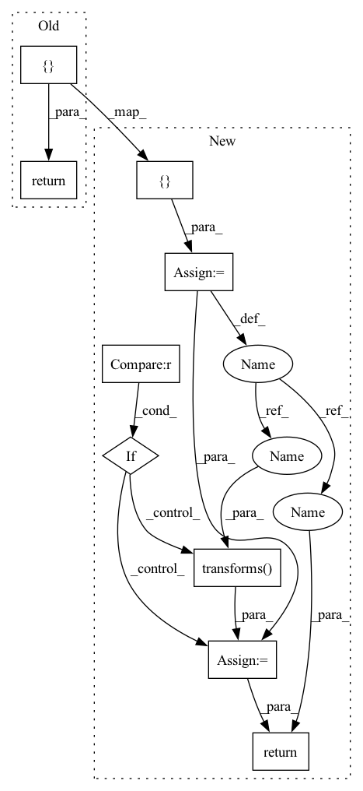

Pattern ID :3501
Before Change
window = Window(col_off, row_off, width, height)
masks = vrt.read(window=window)
masks = masks.astype(np.int32)
return {
"masks": torch.tensor(masks), // type: ignore[attr-defined]
"crs": self.crs,
}
def _check_integrity(self) -> bool:
Check integrity of dataset.
After Change
window = Window(col_off, row_off, width, height)
masks = vrt.read(window=window)
masks = masks.astype(np.int32)
sample = {
"masks": torch.tensor(masks), // type: ignore[attr-defined]
"crs": self.crs,
}
if self.transforms is not None :
sample = self.transforms(sample )
return sample
def _check_integrity(self) -> bool:
Check integrity of dataset.
In pattern: SUPERPATTERN
Frequency: 3
Non-data size: 9
Instances Fragment ID: 13394149
Project Name: microsoft/torchgeo
Commit Name: fae4a0fcc1f2ce714e7820223e35a7f044c12f91
Time: 2021-07-16
Author: ajstewart426@gmail.com
File Name: torchgeo/datasets/cdl.py
M Class Name: CDL
N Class Name: CDL
M Method Name: __getitem__(2)
N Method Name: __getitem__(2)
M Parent Class: GeoDataset
N Parent Class: GeoDataset
M File Name: torchgeo/datasets/cdl.py
N File Name: torchgeo/datasets/cdl.py
M Start Line: 156
M End Line: 159
N Start Line: 156
N End Line: 164
Before Change
data_list.append(image)
image = np.concatenate(data_list) // type: ignore[no-untyped-call]
image = image.astype(np.int32)
return {
"image": torch.tensor(image), // type: ignore[attr-defined]
"crs": self.crs,
}
After Change
// FIXME: different bands have different resolution, won"t be able to concatenate
image = np.concatenate(data_list) // type: ignore[no-untyped-call]
image = image.astype(np.int32)
sample = {
"image": torch.tensor(image), // type: ignore[attr-defined]
"crs": self.crs,
}
if self.transforms is not None :
sample = self.transforms( sample)
return sample
Fragment ID: 13394150
Project Name: microsoft/torchgeo
Commit Name: b50c3582cba0edcb187d46afb7d80a84999d4133
Time: 2021-07-16
Author: ajstewart426@gmail.com
File Name: torchgeo/datasets/sentinel.py
M Class Name: Sentinel2
N Class Name: Sentinel2
M Method Name: __getitem__(2)
N Method Name: __getitem__(2)
M Parent Class: Sentinel
N Parent Class: Sentinel
M File Name: torchgeo/datasets/sentinel.py
N File Name: torchgeo/datasets/sentinel.py
M Start Line: 139
M End Line: 142
N Start Line: 147
N End Line: 155
Before Change
data_list.append(image)
image = np.concatenate(data_list) // type: ignore[no-untyped-call]
image = image.astype(np.int32)
return {
"image": torch.tensor(image), // type: ignore[attr-defined]
"crs": self.crs,
}
class Landsat8(Landsat):
Landsat 8-9 Operational Land Imager (OLI) and Thermal Infrared Sensor (TIRS).After Change
data_list.append(image)
image = np.concatenate(data_list) // type: ignore[no-untyped-call]
image = image.astype(np.int32)
sample = {
"image": torch.tensor(image), // type: ignore[attr-defined]
"crs": self.crs,
}
if self.transforms is not None :
sample = self.transforms( sample)
return sample
class Landsat8(Landsat): Fragment ID: 13394151
Project Name: microsoft/torchgeo
Commit Name: d7f2df061f56254c605596da709b598676622aa3
Time: 2021-07-16
Author: ajstewart426@gmail.com
File Name: torchgeo/datasets/landsat.py
M Class Name: Landsat
N Class Name: Landsat
M Method Name: __getitem__(2)
N Method Name: __getitem__(2)
M Parent Class: GeoDataset,abc.ABC
N Parent Class: GeoDataset,abc.ABC
M File Name: torchgeo/datasets/landsat.py
N File Name: torchgeo/datasets/landsat.py
M Start Line: 116
M End Line: 119
N Start Line: 123
N End Line: 131